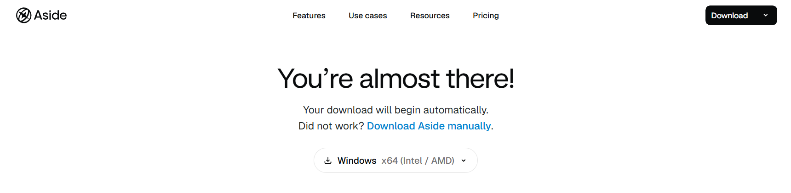
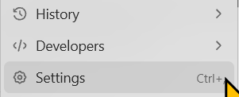
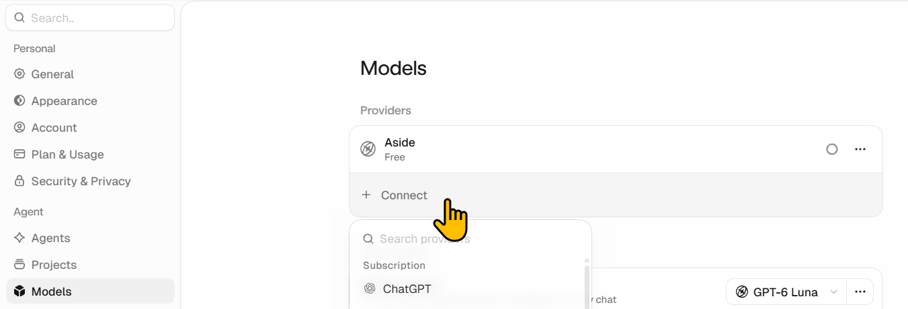
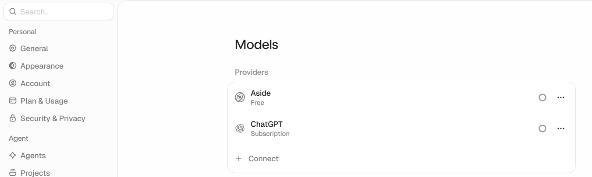
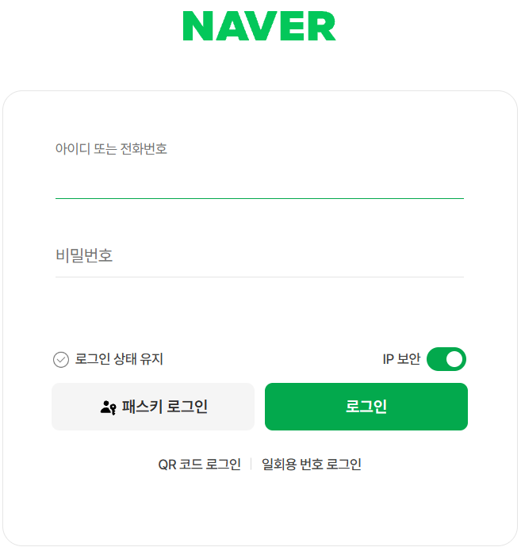
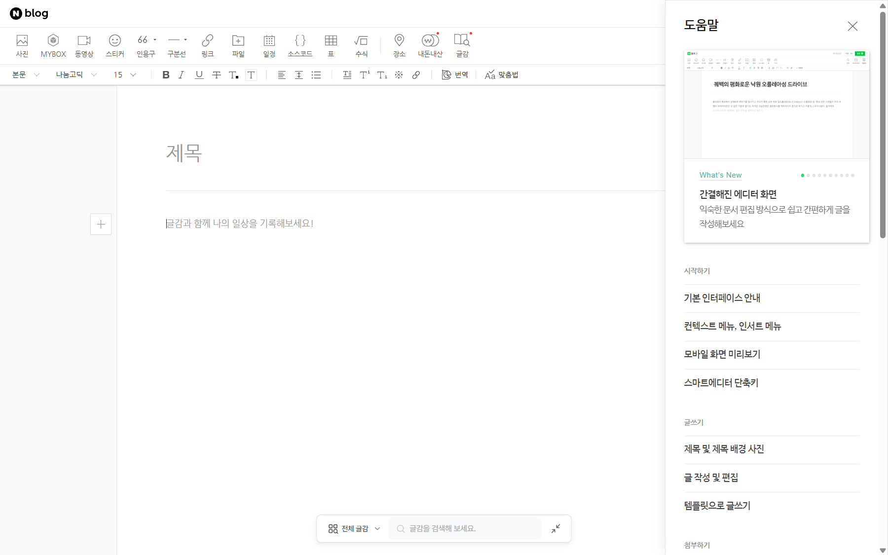
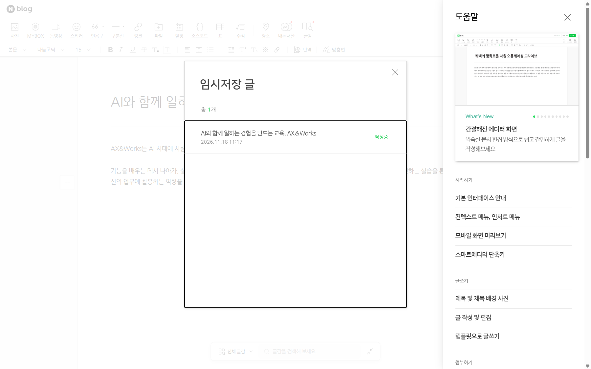
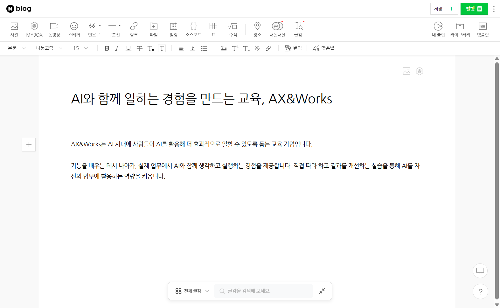

실습 준비
4주차(1) AI에 넣기 전 가림에서 다룬 원칙을 적용해, 이번 실습에는 공개해도 되는 기업자료와 사진을 사용합니다. 짧은 기업 소개글로 먼저 연결을 확인한 뒤, 고객의 질문 하나를 글과 카드로 만들어 네이버에 임시저장하고 다시 열어 확인합니다. 교재의 실습은 여기서 끝납니다.
실습 준비 · Codex 앱, 실습할 네이버 블로그 주소, 공개 가능한 회사 소개나 서비스 자료를 준비하세요. 5단계에서 쓸 네이버 블로그 세팅 스킬 ZIP도 받을 수 있습니다.
프롬프트 복사 방법 · 코드 블록의 문장을 복사해 Codex 채팅에 붙여넣습니다. [회사 이름], [하는 일 한 줄], [내 네이버 블로그 주소], [주제] 같은 대괄호 부분은 괄호까지 지우고 실제 정보로 바꿉니다. 요구받은 로그인과 본인 인증은 해당 앱이나 웹페이지에서 직접 진행합니다. 비밀번호와 인증 코드는 채팅에 붙여넣지 않습니다.
1. Aside 설치
목표 · 내 컴퓨터에 Aside를 설치하고 앱을 엽니다.
직접 할 동작
- Aside 다운로드를 열고 내 컴퓨터에 맞는 설치 파일을 받습니다.
- Windows는 다운로드한
.exe를 열어 설치합니다. Mac은.dmg를 열고 Aside를 응용 프로그램으로 옮겨 실행합니다.
복사 프롬프트 · 이 단계는 설치 파일과 앱을 직접 열면 됩니다.
완료 확인 · Aside 창에 시작 화면 또는 로그인 화면이 보입니다.
막혔을 때 · 자동 다운로드가 시작되지 않으면 Download Aside manually를 누릅니다. 설치 파일이 열리지 않으면 운영체제와 기기에 맞는 파일인지 확인합니다. 회사 PC에서 설치가 차단되면 강사에게 현재 화면을 보여주세요.
실제 캡처 · 다운로드가 시작되지 않으면 파란색 수동 다운로드 링크를 누릅니다.

2. Google 로그인과 ChatGPT 구독 연결
목표 · Google 계정으로 Aside에 로그인하고, Aside의 모델 설정에 ChatGPT 구독 계정을 연결합니다.
직접 할 동작
- Aside 앱에서 Google 로그인을 선택하고 직접 인증합니다.
- 연결 안내가 나오면 ChatGPT 구독 계정을 연결합니다. 안내가 안 보이면 Aside 왼쪽 위 프로필 메뉴에서 Settings → Models → Providers → Connect → ChatGPT로 들어갑니다.
- 구독을 사용하는 ChatGPT 계정으로 직접 로그인·인증합니다. ChatGPT / Subscription이 이미 표시된다면 연결 상태를 확인하고 다음 단계로 갑니다.
복사 프롬프트 · 로그인과 연결은 화면에서 직접 진행합니다.
완료 확인 · Settings → Models → Providers에 ChatGPT / Subscription이 보입니다. 이 표시는 Aside의 모델 제공자 연결을 뜻합니다. Codex가 Aside를 제어하는지는 3단계에서 확인합니다.
막혔을 때 · 인증 화면이 보이지 않으면 Aside의 열린 탭을 확인하고, 연결한 ChatGPT 계정이 구독 계정인지 확인하세요. 구독 연결을 완료하지 못했다면 해당 상태를 구분해 두고 3단계의 브라우저 제어를 별도로 점검하세요.
실제 캡처
-
프로필 메뉴의 Settings를 엽니다.

-
Models → Connect → ChatGPT를 선택합니다.

-
Providers에서
ChatGPT / Subscription표시를 확인합니다.
3. Codex에 Aside 연결하고 글쓰기 화면 열기
목표 · Codex가 Aside를 제어해 내 네이버 블로그의 글쓰기 화면을 실제로 여는지 확인합니다.
직접 할 동작
- Aside 시작 화면 아래 Use Aside with Codex를 누릅니다.
Aside CLI and browser skill installed.가 표시되면 설치가 완료된 것입니다. 기존에 설정했다면 아래 점검부터 시작합니다. - 컴퓨터에 네이버 블로그 자동화 폴더를 만듭니다. Codex에서 이 컴퓨터(This computer)를 선택하고 이 폴더를 프로젝트로 엽니다. Aside는 실행한 상태로 둡니다.
- 아래 요청에서 주소를 바꾸고 Codex에 보냅니다. Aside에 네이버 로그인 화면이 나오면 직접 로그인하고 Codex에
로그인했어라고 답하세요.
복사 프롬프트
지금 이 컴퓨터에서 Codex와 Aside가 제대로 연결됐는지 확인해줘. 문제가 있으면 원인을 찾아 수정한 뒤 다시 확인해줘. 1. 스킬 확인 - 현재 사용자 계정의 aside-browser 스킬을 찾아 읽어줘. - 스킬 안내에 따라 Aside CLI 가이드도 읽어줘. 2. CLI 확인 - aside 명령의 인식 여부와 버전을 확인해줘. - Windows에서 명령을 찾지 못하면 %LOCALAPPDATA%\Aside\CLI 아래에서 aside.exe를 찾아 전체 경로로 실행해줘. - CLI가 없거나 업데이트가 필요하면 스킬 안내에 따라 처리해줘. 3. 실행 중인 Aside 프로필 확인 - CLI의 기본 프로필과 실제 연결된 브라우저 프로필을 확인해줘. - 기본 프로필이 연결되지 않았다면, 연결된 프로필을 지정해 다시 시도해줘. - 연결된 프로필이 여러 개여서 선택이 불분명하면 나에게 물어봐. - 연결된 프로필이 없다면 Aside 실행 등 내가 해야 할 동작을 알려줘. - 프로필을 변경했다면 변경 내용을 알려줘. 4. 실제 브라우저 제어 확인 - Aside 창에서 네이버 블로그를 실제로 열어줘. - 내 블로그 주소: [여기에 실제 네이버 블로그 주소 입력] - 주소를 입력하지 않았다면, 로그인된 본인 계정의 ‘내 블로그’를 통해 접근해줘. - 로그인은 내가 직접 할게. 로그인 화면이 나오면 멈추고 알려줘. - 내가 “로그인했어”라고 하면 이어서 내 블로그의 글쓰기 화면을 열어줘. - 글 작성, 임시저장, 발행은 하지 마. 5. 결과 보고 - 스킬 읽기, CLI 실행, Aside 브라우저 제어, 글쓰기 화면 열기를 각각 성공·실패·확인 대기로 구분해 알려줘. - 실제 열린 URL과 화면 상태를 근거로 판단해줘. - 로그인 화면만 열렸다면 ‘브라우저 제어 성공, 글쓰기 확인 대기’로 보고해줘. - 수정한 내용과 내가 다음에 해야 할 동작을 짧게 알려줘. ChatGPT 구독 연결과 Codex의 Aside 브라우저 제어 연결은 별도로 판단해줘.
완료 확인 · 실제 Aside 창에 내 블로그의 빈 제목·본문 입력란이 보입니다. 네이버 로그인 화면까지만 열렸다면 브라우저 제어는 확인됐고 글쓰기 화면 확인이 남아 있습니다.
막혔을 때 · Aside가 열려 있어도 Codex가 쓰는 연결 도구(CLI)가 다른 프로필을 기본으로 선택하면 실패할 수 있습니다. 위 요청으로 실제로 연결된 프로필을 확인하고, 여러 개라면 내 실습 프로필을 골라 알려주세요. 변경 후 같은 요청으로 다시 확인합니다. 스킬을 찾지 못하면 Aside의 연결 설치 상태를 확인하고 같은 프로젝트에서 새 Codex 채팅을 열어 재시도하세요.
실제 캡처
-
로그인 화면이 뜨면 Aside에서 직접 로그인합니다.

-
로그인 후 제목과 본문이 비어 있는 편집기가 열리면 점검 완료입니다.

4. 짧은 기업 소개글을 임시저장하고 다시 열기
목표 · Codex가 작성한 소개글을 Aside가 편집기에 넣고, 임시저장한 글을 다시 열 수 있는지 확인합니다.
직접 할 동작
- Aside에 내 블로그의 빈 글쓰기 화면이 열려 있는지 봅니다.
- 회사 이름과 하는 일을 바꿔 같은 Codex 채팅에 보냅니다. 로그인이나 실행 승인 요청이 나오면 화면과 작업 내용을 확인하고 이어갑니다.
- 임시저장 목록에서 제목을 찾고, 다시 열린 편집기에서 본문 마지막 문장까지 확인합니다.
복사 프롬프트
우리 회사는 [회사 이름]이고 [하는 일 한 줄]을 해. 이 정보로 제목 한 줄과 짧은 기업 소개글을 써줘. 이어서 aside-browser 스킬을 사용해 Aside에 열려 있는 내 네이버 블로그 글쓰기 화면에 제목과 본문을 입력하고 임시저장해줘. 기존 작성 내용이 있으면 덮어쓰지 말고 알려줘. 임시저장한 글을 목록에서 다시 열어 제목과 본문이 유지되는지 확인해줘. 발행은 하지 마.
완료 확인 · 소개글이 임시저장 글 목록에 있고, 다시 열었을 때 제목과 본문 마지막 문장이 보입니다.
막혔을 때 · 기존 글이 열려 있다면 그 글을 두고 빈 글쓰기 화면을 먼저 여세요. 재개방할 때 현재 편집 중인 문서라는 알림이 나오면 임시저장 완료를 확인한 뒤 편집기를 새로고침하고 목록에서 같은 제목을 다시 엽니다.
실제 캡처
-
임시저장 글목록에서 방금 입력한 소개글 제목을 찾습니다.
-
재개방한 편집기에서 제목과 마지막 문장까지 확인합니다.

5. ZIP으로 세팅 스킬 설치
목표 · 회사 자료를 읽고 블로그 운영 기준을 만드는 스킬을 현재 프로젝트에 넣습니다.
직접 할 동작
- 4주차 네이버 블로그 세팅 스킬 ZIP을 저장합니다.
- Codex에서 네이버 블로그 자동화 프로젝트를 열었는지 확인하고 아래 요청을 보냅니다.
- 설치가 끝나면 같은 프로젝트에서 새 채팅을 엽니다.
복사 프롬프트
내 다운로드 폴더에서 4주차_네이버블로그_세팅스킬.zip을 찾아줘. 그 안의 naver-blog-setup 스킬 폴더를 통째로 풀어서, 지금 열린 네이버 블로그 자동화 프로젝트의 .agents/skills 폴더 안에 설치해줘. 설치한 SKILL.md의 위치를 알려줘.
완료 확인 · Codex가 알려준 위치가 현재 프로젝트 안의 .agents/skills/naver-blog-setup/SKILL.md입니다.
막혔을 때 · 다운로드 폴더에 ZIP이 없으면 파일을 저장한 위치를 알려주세요. 스킬이 안 보이면 naver-blog-setup 폴더가 겹쳐 들어가 있지 않은지 Codex에 확인을 요청하고 같은 프로젝트에서 새 채팅을 엽니다.
6. 기업자료를 읽히고 브랜드 기준 저장
목표 · 누구에게 글을 쓰고, 글을 읽은 고객이 어떤 행동을 하게 할지 정합니다.
직접 할 동작
- 프로젝트에
기업자료폴더를 만듭니다. 공개 가능한 회사 소개서, 주력 서비스 안내, 고객이 자주 하는 질문, 회사의 공식 문의·예약 주소를 넣습니다. 소개서가 없다면 회사명·하는 일·주력 서비스·주요 고객을 메모 한 장에 적어 넣으세요. - 같은 프로젝트의 새 채팅에서 첫 요청을 보냅니다. Codex가 읽은 파일과 제안한 고객, 고객에게 안내할 다음 행동(CTA)을 확인합니다. 예를 들어 견적 문의를 받으려면 실제 견적 문의 페이지를 기준으로 정합니다.
- 제안이 맞으면 저장 요청을 보냅니다. 바꿀 부분이 있다면 먼저 고쳐 달라고 요청하세요.
복사 프롬프트
$naver-blog-setup 기업자료 폴더를 먼저 읽고 우리 네이버 블로그 자동화를 세팅해줘.
정리한 고객과 CTA가 맞아. 이 내용으로 브랜드 기준을 저장하고 세팅을 마쳐줘.
완료 확인 · 프로젝트에 브랜드_기준.md, AGENTS.md, 네이버블로그_SEO_작성기준.md, 디자인 폴더가 생깁니다. 브랜드_기준.md에서 고객과 CTA가 내가 확인한 내용인지, CTA 주소가 실제 주소인지 봅니다.
막혔을 때 · Codex가 기업자료를 찾지 못하면 현재 프로젝트와 폴더 이름을 확인합니다. 고객이나 문의 주소가 자료에 없다면 확인 가능한 정보를 직접 알려주세요. 실제 주소를 아직 모르면 확인 필요로 남기고 임의의 주소를 넣지 않습니다.
7. 주제 한 줄로 원고와 카드 만들기
목표 · 브랜드 기준을 재사용해 고객의 질문에 답하는 원고와 카드 4장을 만듭니다.
직접 할 동작
- 같은 프로젝트의 새 Codex 채팅에서 고객이 실제로 물어보는 질문을 주제로 보냅니다.
블로그_결과의 새 글 폴더를 열어 원고, 썸네일, 카드, 편집기 조립 순서를 봅니다. 회사 정보, 문의 주소, 이미지 글자 잘림을 확인합니다.로컬 초안에서 멈췄다면 이 단계의 결과를 검토할 차례입니다. 수정이 필요하면 반영된 파일을 다시 열어보고, 확인이 끝나면 8단계로 갑니다.
복사 프롬프트
나 이번에 [고객이 문의하기 전에 준비할 정보]를 주제로 블로그 글을 쓸 거야.
완료 확인 · 같은 글 폴더에 원고.md, 편집기_조립.md, 썸네일 PNG 1장, 본문 카드 PNG 3장이 있습니다. 각 이미지가 열리고, 글과 같은 내용을 담고 있습니다.
막혔을 때 · 브랜드 기준을 다시 묻거나 다른 회사 정보가 섞이면 프로젝트 위치와 브랜드_기준.md를 확인합니다. PNG 출력이 실패하면 Codex에 실패 원인을 확인해 달라고 요청하세요. Python 또는 Chrome·Edge가 없다고 나오면 수업에서 준비한 설치 상태를 확인한 뒤 카드 출력을 다시 요청합니다.
8. 확인한 원고와 카드를 Aside로 임시저장
목표 · 검토한 글과 이미지 파일을 내 블로그 편집기에 넣어 임시저장합니다.
직접 할 동작
- 7단계에서 만든 원고와 카드를 확인합니다. 아직 임시저장한 글이 없다면 같은 Codex 채팅에서 아래 요청의 주소를 바꾸어 보냅니다.
- 진행 중 네이버 로그인, 저장할 블로그 확인, 실행 승인 요청이 나올 수 있습니다. 로그인은 Aside에서 직접 하고, 계정이 다르면 그 상태로 진행하지 말고 원하는 블로그 주소와 열린 계정을 확인합니다. 실행 승인은 요청의 동작과 대상을 읽고 처리합니다.
- 편집기의 제목·본문과 사진을 봅니다. 썸네일이 첫 이미지이자 대표 사진이고, 본문 카드가
편집기_조립.md에 적힌 위치와 순서로 들어갔는지 확인합니다.
복사 프롬프트
$aside-browser 확인한 원고와 카드를 Aside에서 [내 네이버 블로그 주소]의 글쓰기 화면에 넣고 임시저장해줘. 같은 글 폴더의 편집기_조립.md에 따라 제목·본문과 카드의 위치를 맞추고, 첫 이미지인 썸네일을 대표 사진으로 설정해줘. 열린 계정과 저장 대상이 다르거나 기존 글이 편집 중이면 입력하기 전에 멈추고 알려줘. 로그인은 내가 직접 할게. 저장한 글을 다시 열어 본문 마지막 문장, 카드 순서, 대표 사진, CTA 링크를 확인해줘. 발행은 하지 마.
완료 확인 · 네이버에서 저장 완료 표시가 나오고 임시저장 글 목록에 방금 작업한 제목이 보입니다. Codex가 저장을 진행 중이라고 알리면 목록에서 실제 상태를 확인하세요.
막혔을 때 · Aside가 입력이나 사진 첨부에서 멈추면 열린 편집기와 저장 상태부터 확인하세요. 필요한 부분은 편집기_조립.md에 따라 직접 채우고, 사진과 링크까지 확인한 뒤 편집기 상단의 저장을 누릅니다. 이미 같은 제목의 임시저장 글이 있으면 그 글을 열어 이어서 확인합니다.
9. 임시저장본을 열어 본문과 카드 확인
목표 · 임시저장 목록에서 다시 연 글이 검토한 원고와 같은지 확인합니다.
직접 할 동작
- Aside의 네이버 글쓰기 화면에서 임시저장 글 목록을 열고, 방금 저장한 제목을 선택합니다. 이미 재개방된 상태라면 Aside에서 열린 제목과 본문을 직접 대조합니다.
- 아래 항목을 차례로 확인합니다.
복사 프롬프트 · 8단계에서 저장까지만 끝났거나 확인 결과가 불분명할 때 사용합니다.
$aside-browser 방금 임시저장한 글을 네이버 임시저장 목록에서 다시 열고, 편집기_조립.md와 비교해줘. 제목과 본문 마지막 문장, 카드 순서, 대표 사진, CTA의 실제 연결 주소를 각각 확인해줘. 화면에서 확인하지 못한 항목은 확인 대기로 알려줘. 발행은 하지 마.
완료 확인 · 목록에서 해당 글을 다시 열었고 위 네 항목을 확인했습니다. 여기까지 하면 실습 완료입니다.
막혔을 때 · 빈 글이 열렸다면 저장한 계정과 제목이 맞는지 먼저 봅니다. 카드나 링크가 누락됐으면 같은 임시저장본에서 빠진 부분을 반영하고, 다시 저장한 뒤 같은 글을 열어 확인합니다. 대표 사진이나 주소를 화면에서 판단할 수 없다면 그 항목은 확인 대기로 둡니다.
실제 화면 자료 · 공개 결과물에는 기업 AI 교육 문의를 주제로 한 썸네일 1장, 본문 카드 3장, 글 끝의 교육 문의 링크가 들어 있습니다. 카드 사이에 설명을 넣는 방식과 글 끝의 문의 안내를 참고하세요. 실습 중 확인할 화면은 임시저장 목록에서 다시 연 편집기입니다. 카드가 포함된 최종 결과 예시